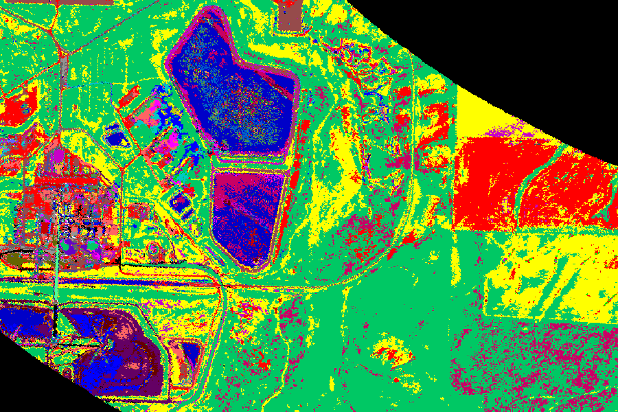
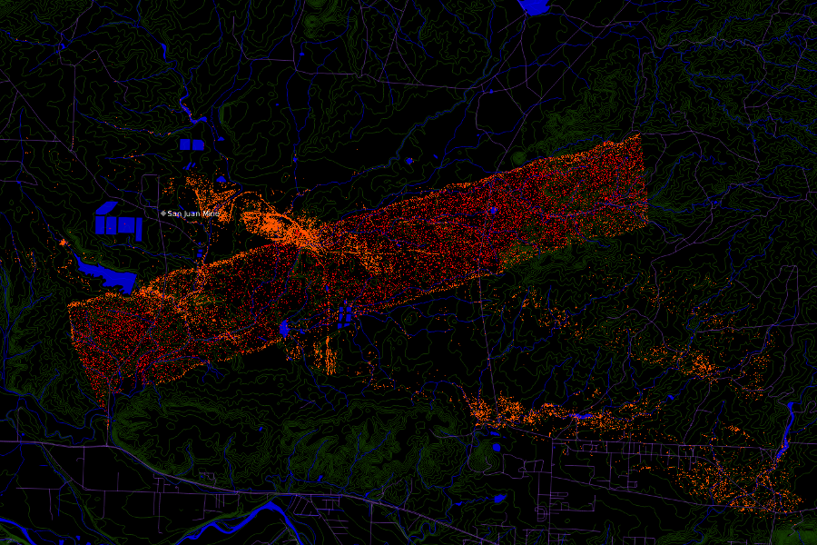
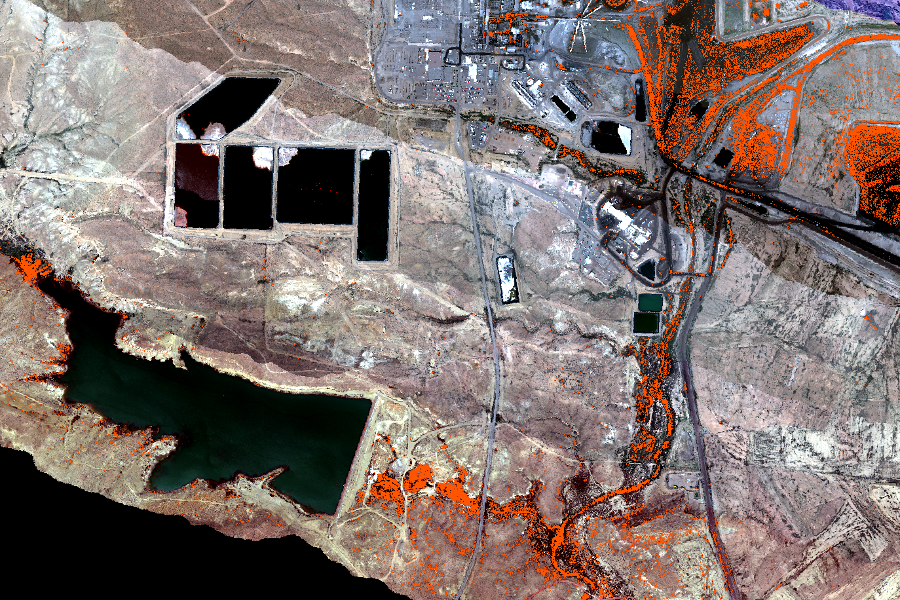

---
---
{% include header.html %}

Process Imagery
Load and process georeferenced hyperspectral imagery.

Analyze Spectra
Characterize images using spectral reflectance curves.

Identify Minerals
Classify land cover with spectral libraries.

Map Mines
Locate mines and other surface features.

Environmental Impact
Correlate mining with environmental impacts on water resources.
Coal and Open-pit surface mining impacts on American Lands (COAL)
COAL is a Python library for processing hyperspectral imagery from remote sensing devices such as the Airborne Visible/InfraRed Imaging Spectrometer (AVIRIS). COAL is being developed as a 2016 – 2017 senior capstone collaboration between scientists at the Jet Propulsion Laboratory (JPL) and computer science students at Oregon State University (OSU). COAL aims to provide a suite of algorithms for classifying land cover, identifying mines and other geographic features, and correlating them with environmental data sets. COAL is Free and Open Source Software under the terms of the Apache License Version 2.0.
Docs
Read the documentation to learn how to install and use the Python COAL package pycoal.
For more information:
- Browse the API reference for detailed class and method documentation,
- Visit our GitHub Organization for the source code and issue tracker, or
- View development documentation on our wiki.
Blog
Our most recent posts:
View all of our posts on our blog.
Team
Jet Propulsion Laboratory:
- Lewis John McGibbney, Ph.D.
- Kim Whitehall, Ph.D.
Oregon State University:
- Taylor Alexander Brown
- Heidi Ann Clayton
- Xiaomei Wang
Read about our team to contact us or learn more.
{% include footer.html %}